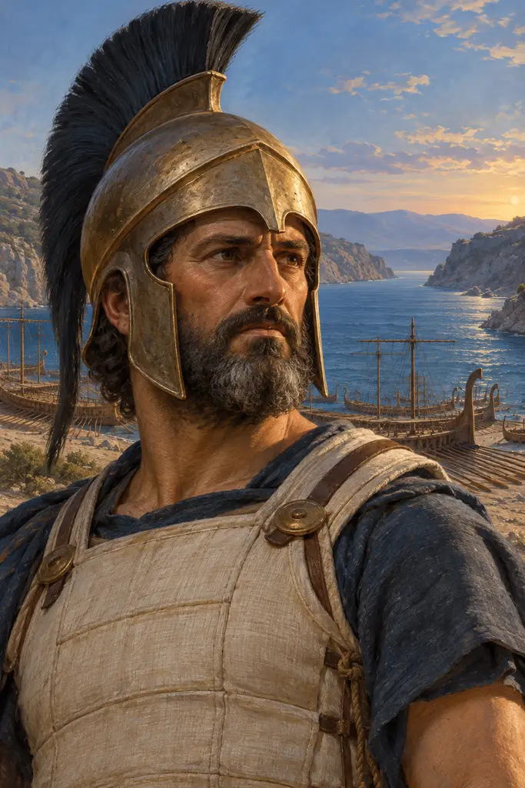
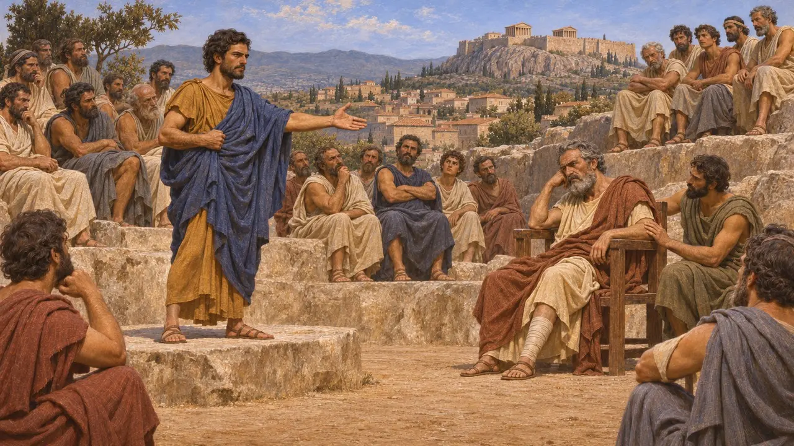
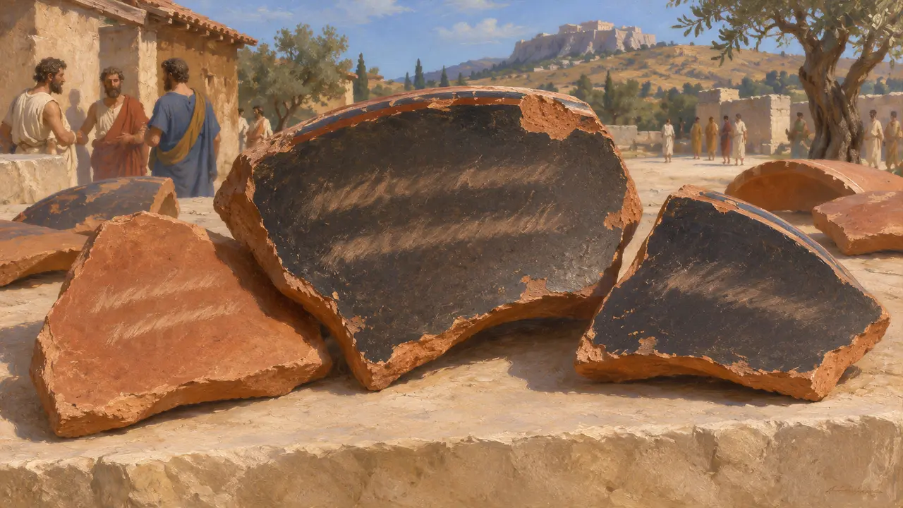
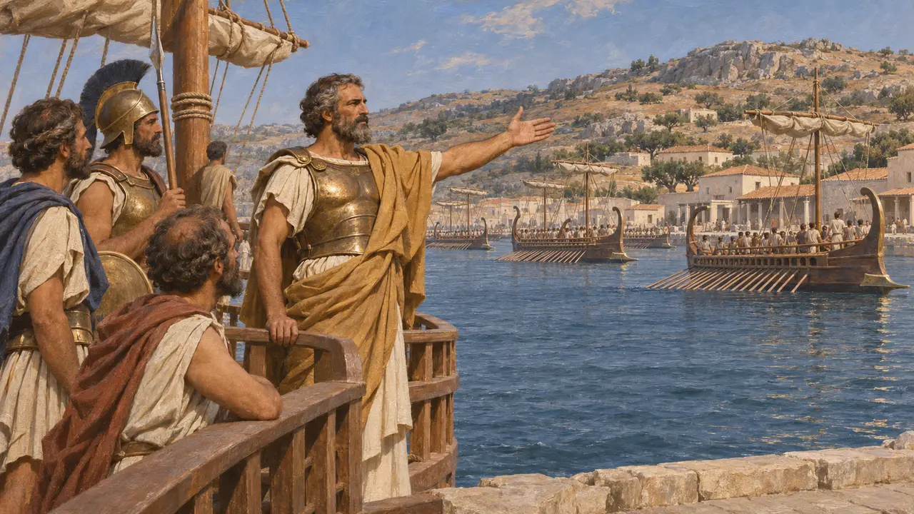
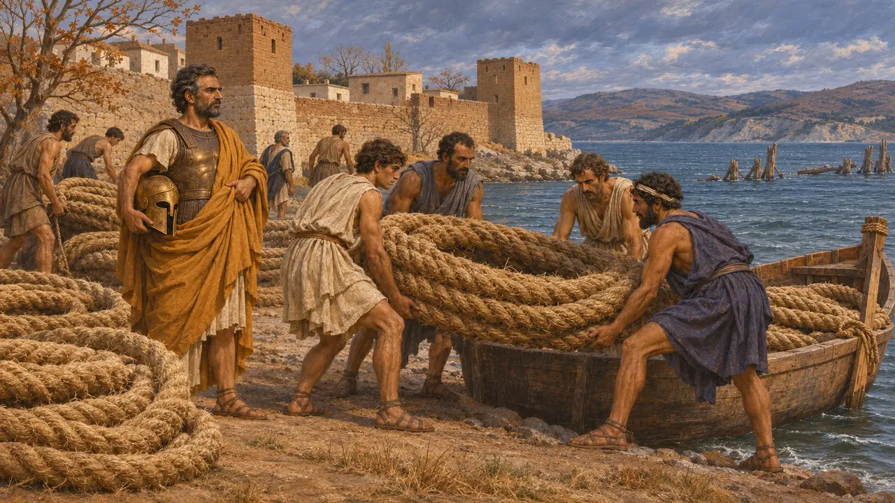

کسانتیپوس پسر آریفرون، اشرافزادهای آتنی بود که میلتیادس را به دادگاه کشاند، در سال 484 با اُستراکیسم تبعید شد، در سال 480 فراخوانده شد و در سال 479 فرماندهی ناوگان آتن را بر عهده داشت. پس از پیروزی یونانیان در میکاله، او ماند تا سستوس، دژ پارسیان بر کرانهٔ هلسپونت، را محاصره کند و طنابهای پلهای خشایارشا را به آتن فرستاد. او پدر پریکلس بود.
در بازی: گاهنامه کسانتیپوس را سپهبد آتنی سال 479 پ.م. و پدر پریکلس میخواند؛ کسی که آتنیان را در میکاله رهبری کرد، سستوس را در محاصره گرفت و طنابهای پل را به وطن آورد. این روایت از هرودوت پیروی میکند.

خانواده و دادگاه میلتیادس
روایت باستانیبه گفتهٔ هرودوت، کسانتیپوس با آگاریسته، برادرزادهٔ کلیستنسِ اصلاحگر، ازدواج کرد و پسرشان پریکلس بود. در سال 489 پ.م.، پس از شکست میلتیادس در یورش به پاروس، کسانتیپوس او را در برابر مردم آتن به محاکمه کشید و خواستار کیفر مرگ شد. میلتیادس، پیروز ماراتن، از مرگ رهایی یافت اما به پرداخت پنجاه تالان محکوم شد و اندکی بعد بر اثر زخمش درگذشت.
Herodotus 6.131, 6.136

اُستراکیسم بر سفالپارهها
در اسنادسفالپارههایی با نام کسانتیپوس پسر آریفرون در آتن از خاک بیرون آمده است. اینها آرایی بودند که در یک استراکیسم داده شده بودند، روندی که آتنیان با آن میتوانستند شهروندی برجسته را برای ده سال تبعید کنند. بر یکی از آنها دوبیتیِ کوتاهی در وزن مرثیه نقش بسته که او را به بیشترین گناه در میان همهٔ رهبران متهم میکند. خودِ سفالپارهها تاریخی ندارند.
Ostraca from Athens; M. Lang, Ostraka (The Athenian Agora XXV), 1990

تبعید، فراخوانی و فرماندهی ناوگان
روایت باستانی«اصول حکومت آتن»، منسوب به ارسطو، تبعید او با اُستراسیسم را در سال 484 میداند و میگوید تبعیدیان در سال 480، هنگام پیشروی خشایارشا، فراخوانده شدند. به گفتهٔ هرودوت، در بهار 479 کسانتیپوس فرماندهی کشتیهای آتنی را در ناوگان یونانی که زیر فرمان لئوتیخیدس، شاه اسپارت، در اگینا گرد آمده بود بر عهده داشت. در تابستان همان سال در میکاله، یونانیان به اردوگاه پارسیان یورش بردند و کشتیهای به ساحل کشیده را به آتش کشیدند، و آتنیان در امتداد کرانه میجنگیدند.
Aristotle, Athenaion Politeia 22.6-8; Herodotus 8.131, 9.96-106

محاصرهٔ سستوس و طنابها
روایت باستانیلئوتیخیدس و پلوپونزیان چون دیدند پلهای خشایارشا پیشتر شکسته است، به خانه بازگشتند. کسانتیپوس و آتنیان ماندند تا سستوس را محاصره کنند. این شهر تا پاییز یا زمستان پایداری کرد. چون سستوس گشوده شد، آرتائوکتس، فرماندار پارسی، را که یونانیان آن دیار به غارت پرستشگاه پروتسیلائوس متهمش میکردند، در نزدیکی جایی که پل به پایان میرسید کشتند. طنابهای پل را برای معابد به آتن بردند. هیچ گزارشی از این رویدادها در منابع پارسی برجای نمانده است.
Herodotus 9.114-121; Thucydides 1.89
سگ وفادار
افسانهٔ متأخرپلوتارک، که نزدیک به شش سده بعد مینوشت، داستانی از تخلیهٔ آتن در سال 480 بازمیگوید. سگ کسانتیپوس حاضر نشد بر جای بماند و در کنار کشتی او تا سالامیس شنا کرد، سپس از پا افتاد و مرد. آن را بر دماغهای به خاک سپردند که از آن پس «گور سگ» خوانده شد.
Plutarch, Themistocles 10
منابع
- Herodotus 8.131, 9.96-121
- Herodotus 6.131, 6.136
- Thucydides 1.89
- Aristotle, Athenaion Politeia 22
- M. Lang, Ostraka (The Athenian Agora XXV), 1990
- Plutarch, Themistocles 10